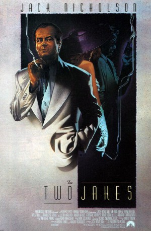

#8869 Die Spur führt zurück - The two Jakes
Alternativ: The Two Jakes
 
 IMDB-Wertung: 6.1 / 10
IMDB-Wertung: 6.1 / 10  Metascore: 0
Metascore: 0 
After the war, L.A. private eye Jake Gittes is hired by realtor Jake Berman. He proves the infidelity of Berman's wife Kitty and sets up a way for her to be caught in the act. At the rendezvous, Berman shoots the co-respondent who turns out to be his business partner. Gittes finds himself in the middle of a complicated web, under pressure from all sides for a wire recording of the fatal encounter. He then realises that the land the partners were developing was once an orange grove connected with a case he has never quite got over.
Jahr: 1990
Dauer: 128 Minuten
FSK: 12
Land: USA Studio: Paramount PicturesTonspuren:
Untertitel:
Auflösung: 1080p (1920x1080) Größe: 9277 MB
Genre: Drama, Krimi, Liebe, Mystery
Regisseur:  Jack Nicholson
Jack Nicholson
Drehbuch: Robert Towne
Soundtrack: Van Dyke Parks
Darsteller:
Datei: X:\2-Dilogie(A-F)\Chinatown\Spur führt zurück - The two Jakes, Die (1990, FSK12, 1920x1080).mkv seit 03.05.2018
Festplatte: HD Collection-2(A-Z)-3(A-M)
 Alle Filme aus Gruppe '2-Dilogie(A-F)\Chinatown'
Alle Filme aus Gruppe '2-Dilogie(A-F)\Chinatown'
- Chinatown
- Spur führt zurück - The two Jakes, Die (der aktuelle Film)